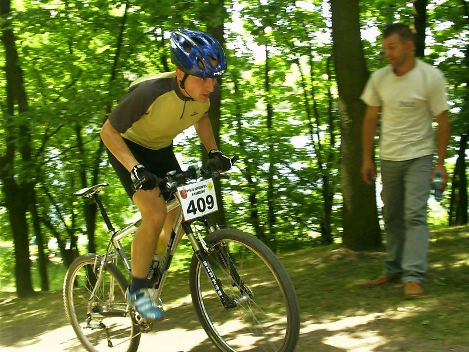

Маунтинбайк
Кросс-кантри и эндуро по лесным и горным тропам: техника, контроль скорости на спусках и работа с рельефом.
Что это за дисциплина
Маунтинбайк объединяет несколько форматов: кросс-кантри (XC) с акцентом на выносливость и подъёмы, и эндуро с упором на техничные спуски. Байк оснащён амортизационной вилкой, часто и задней подвеской, широкими покрышками для сцепления на грунте.
Ключевые навыки — чтение линии на тропе, работа с весом тела на спусках и подъёмах, торможение в повороте и преодоление препятствий: корней, камней, бродов.
С чего начать
- Подберите байк под формат: XC-хардтейл для скорости или двухподвес для спусков
- Начните с зелёных и синих трасс, постепенно переходя на технично сложные
- Освойте базовую посадку: локти в стороны, вес на педалях на спусках
- Тренируйте баланс на низкой скорости — это основа контроля на тропе
Тренировочный подход
Тренировки сочетают аэробные выезды по пересечённой местности с отдельными сессиями по технике: работа с обратной связью тренера на конкретных элементах трассы — корнях, камнях, бермах.
Другие дисциплины
Попробуйте себя в другом формате.
Готовы выйти на старт?
Оставьте почту — пришлём подборку трейлов рядом с вами и вводный план по технике.